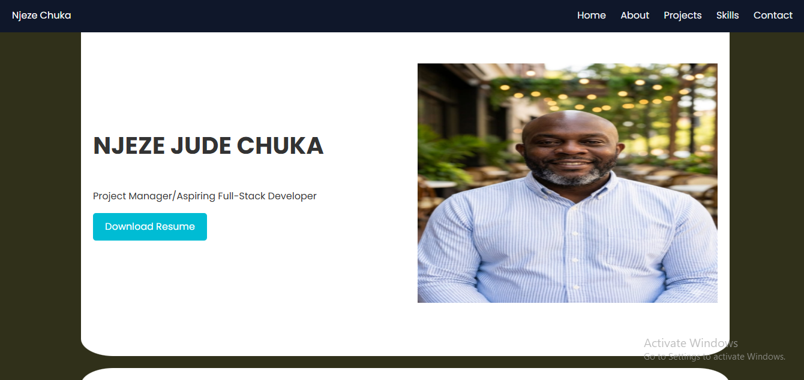
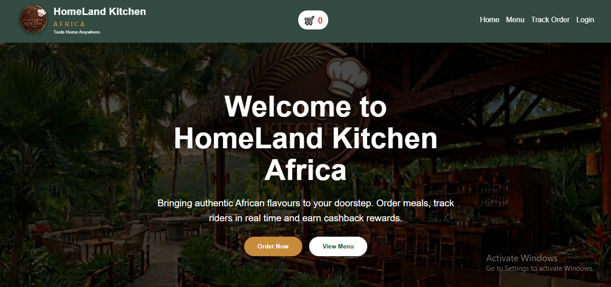
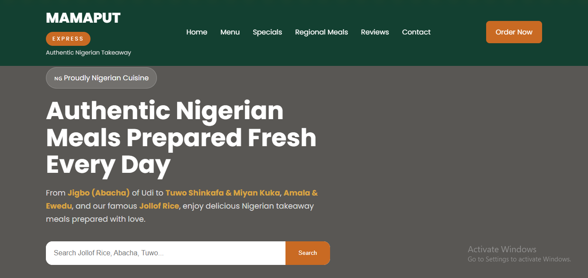
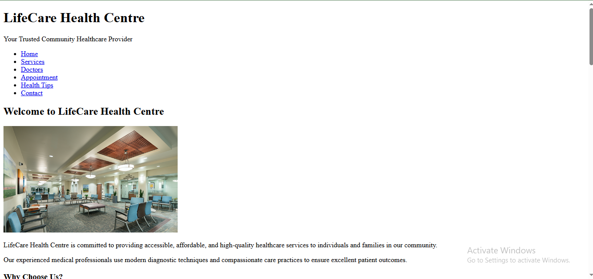

Building Digital Solutions • Driving Operational Excellence
Frontend Web Developer
CHUKA NJEZE
Frontend Web Developer
Chief Operating Officer
Project Management Professional
Environmental Management Consultant
I combine technology, project management and operational leadership to deliver innovative digital solutions, sustainable environmental initiatives and business transformation projects.

About Me
Who I Am
I am Chuka Njeze, a technology-driven operations executive with over two decades of experience delivering projects, improving operational performance, and leading multidisciplinary teams across telecommunications, environmental management, engineering support services and business consulting.
As the Chief Operating Officer of Dunon Synergy Projects Limited, I oversee project execution, strategic planning, stakeholder engagement and operational excellence while continuously expanding my expertise in Frontend Web Development to create modern, responsive and user-friendly digital solutions.
Core Competencies
What I Bring To Every Project
Frontend Development
Building modern, responsive and user-friendly websites using HTML, CSS, JavaScript and Git.
Project Management
Planning, coordinating and successfully delivering projects while ensuring quality and stakeholder satisfaction.
Operations Management
Driving operational excellence through process improvement, leadership and resource optimization.
Environmental Management
Environmental sustainability, waste management, compliance and consultancy services.
Water Infrastructure
Planning, maintenance and management of water infrastructure and utility systems.
Business Consulting
Helping organizations improve business processes, strategy implementation and sustainable growth.
Core Competencies
What I Do Best
Project Management
Planning, execution, monitoring and successful delivery of projects.
Operations Leadership
Managing teams, improving efficiency and driving results.
Frontend Development
Building responsive, accessible and modern websites.
Environmental Management
Sustainable environmental planning and implementation.
Business Analysis
Process improvement, requirements gathering and solution design.
Strategic Planning
Developing practical strategies for growth and organizational success.
Skills & Expertise
Technical and Professional Competencies
Technical Skills
- HTML5 CSS3
- JavaScript (Learning)
- Responsive Web Design Git & GitHub
- Visual Studio Code
- Website Deployment (GitHub Pages)
Professional Skills
- Operations Management
- Project Management
- Environmental Management
- Water Infrastructure Management
- Strategic Planning
- Team Leadership
- Business Development
- Stakeholder Engagement
Projects
Technology & Professional Portfolio
Technology Projects



Professional Projects
Completed
UNTH Environmental Management Consultancy
Led the development of an environmental management framework covering sustainability, waste management, environmental compliance, beautification and policy implementation across the University of Nigeria Teaching Hospital.
Project Management
Environmental Management
Sustainability
Active
UNTH Water Operations Management
Managing daily water production, maintenance, operational planning and infrastructure improvements to ensure uninterrupted water supply across the hospital community.
Operations
Water Engineering
Maintenance
Completed
Umuavulu Integrated Environmental Management Framework
Coordinated the preparation of a comprehensive community environmental management framework focused on sustainability, land use planning, waste management and climate resilience.
Consultancy
Environmental Planning
Community Development
Career Highlights
Professional Impact & Achievements
20+
Years Professional Experience
50+
Projects Successfully Delivered
100+
Personnel Coordinated
UNTH
Water Operations Leadership
Environmental
Consultancy & Sustainability
Frontend
HTML • CSS • JavaScript
Let's Connect
Available for opportunities, consulting and collaborations
Get In Touch
Whether you need an operations leader, project manager, environmental consultant or frontend web developer, I'd be delighted to discuss how we can work together.
Location
Enugu, Nigeria
Phone
+234 913 772 9279GitHub
github.com/chukanjeze-stackLet's Build Something Great Together
I'm always open to discussing innovative projects, operational improvement initiatives, consulting opportunities and exciting collaborations.
Download Resume